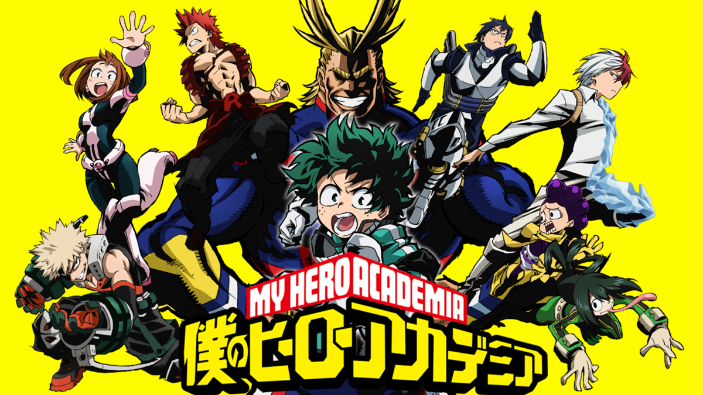
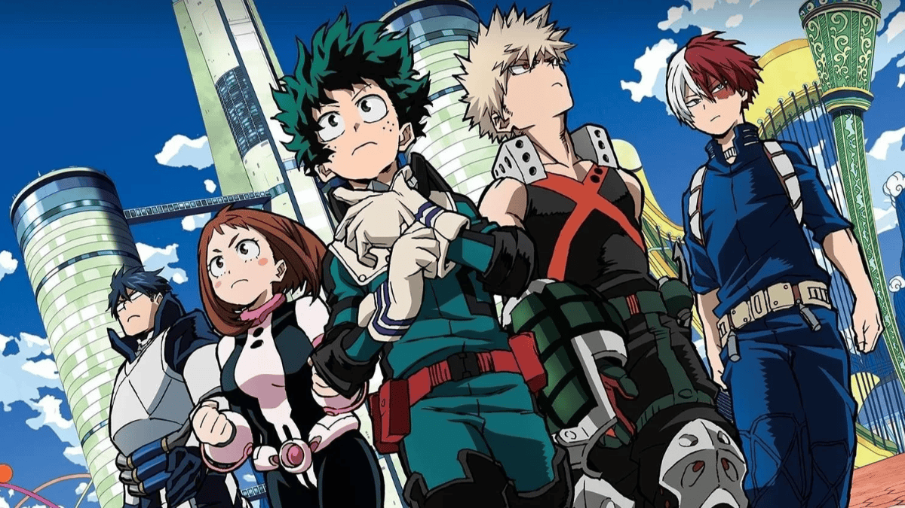
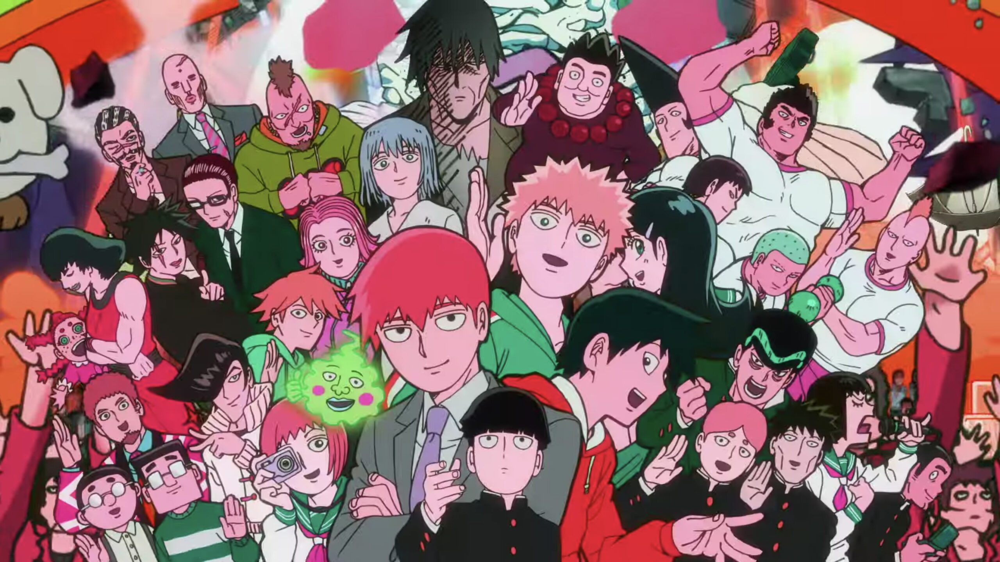
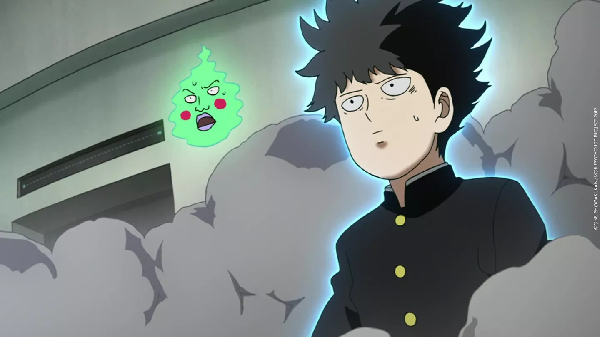
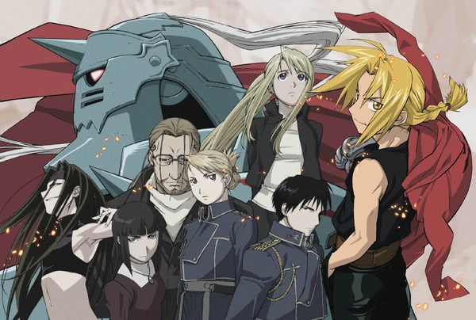

3° Boku no Hero Academia

Boku no Hero Academia conta a história de Izuku "Deku" Midoriya, um jovem que nasceu sem Individualidade (poder) em um mundo onde 80% da população possui essa habilidade. Apesar de não ter poderes, Deku sonha em se tornar um herói e, inspirado pelo seu ídolo, All Might, ele se esforça para alcançar seu objetivo. A história segue Deku enquanto ele entra na UA High School, uma escola de ensino médio para aspirantes a heróis, e treina para se tornar um herói.
A série explora temas como amizade, superação, trabalho em equipe e a importância de ter um objetivo. Além disso, Boku no Hero Academia também aborda questões sociais como discriminação e desigualdade, mostrando como a falta de Individualidade pode afetar a vida das pessoas.
Enredo

Em um mundo onde 80% da população mundial possuem super poderes, o tímido estudante Izuku Midoriya teve a infelicidade de nascer sem poderes.

Grande fã do sorridente All Might, o herói conhecido como o símbolo da paz, Izuku, sofre com a frustração de saber que jamais terá uma individualidade especial para que possa se tornar, assim como seu grande ídolo, em um defensor dos fracos e oprimidos.
Mesmo sofrendo bullying por seus amigos de escola, como o arrogante Katsuki Bakugo, o garoto nunca abandonou o herói existente dentro de si. Gentil e generoso, ele está sempre pronto a ajudar quem precisa.
Porém, um inesperado encontro irá mudar o destino de Izuku. Destino esse que o levará a ingressar no tão sonhado colégio U.A., instituição para onde os grandes heróis vão estudar e treinar. A partir daí, as cortinas de uma fantástica aventura repleta de personagens cativantes e temerosos vilões se abrem para o jovem Midoriya.
2° Mob Psycho 100

Mob Psycho 100 é uma mistura de sobrenatural, ação e comédia apresentada com uma das crianças mais fortes do anime. A história segue Shigeo Kageyama, apelidado de Mob, um esper de 14 anos que luta para manter seus poderes psíquicos sob controle perto do povo. Para ajudar a aprender a controlar suas habilidades, Mob trabalha como assistente de Arataka Reigen, um autoproclamado médium espírita. Juntos, eles resolvem vários casos sobrenaturais enquanto ajudam Mob a viver uma vida normal, assim como aqueles ao seu redor.
Enredo

O anime Mob Psycho 100 acompanha a história de Shigeo Kageyama, apelidado de "Mob", um jovem com habilidades psíquicas extraordinárias. Apesar de ter poderes muito fortes, Mob é um garoto tímido e inseguro, que prefere passar despercebido. Ele tenta controlar seus poderes e levar uma vida normal, mas acaba se envolvendo em situações inusitadas com outros psíquicos e com o seu mentor, Reigen Arataka, um charlatão que finge ter poderes.

A série explora temas como autoconhecimento, amizade, superação e a importância de ter um objetivo. Mob precisa aprender a lidar com seus poderes e com as responsabilidades que eles trazem, enquanto tenta encontrar seu lugar no mundo.
1° Fullmetal Alchemist

Fullmetal Alchemist foi um sucesso de crítica tão grande nos anos 2000 que acabou recebendo duas adaptações pelo Studio Bones. A série gira principalmente em torno dos irmãos Elric, Edward e Alphonse, que quebram a regra proibida da alquimia em uma tentativa de ressuscitar sua mãe morta.
O ritual fracassado resulta na tomada de todo o corpo e membros de Alphonse de Edward. Para trazer de volta tudo o que perderam, os irmãos partiram em busca da Pedra Filosofal! A forma como esta série culmina do início ao fim sem deixar pontas soltas faz dela um dos melhores animes até hoje.
Enredo

O enredo de Fullmetal Alchemist gira em torno dos irmãos Edward e Alphonse Elric, que tentam usar a alquimia para trazer sua mãe de volta à vida. No entanto, o experimento dá errado, e Edward perde um braço e uma perna, enquanto Alphonse perde seu corpo físico. Edward então fixa a alma de Alphonse em uma armadura.

Os irmãos então partem em uma jornada para encontrar a lendária Pedra Filosofal, que pode restaurar seus corpos. Ao longo do caminho, eles enfrentam diversos desafios, incluindo homúnculos, que são seres criados a partir da Pedra Filosofal, e o governo de Amestris, que está envolvido em um grande segredo.
A história de Fullmetal Alchemist é cheia de ação, drama e mistério, e explora temas como a busca pela imortalidade, o poder da família e o preço da ambição.